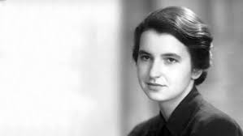
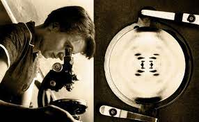

Rosalind Franklin


Introducción
Hoy, en medio de la pandemia que nos asola, su efeméride también sirve para recordarnos que su legado no empieza y acaba en los rayos X y el ADN, pues fue también una gran experta en el estudio de los virus que causan las enfermedades de las plantas y de las personas.




Florence Bell

Introducción
Lo que ni los escritores a los que se les ocurrió el titular "Mujer científica explica" ni sus lectores podrían haber sabido es que, en el curso de su investigación de doctorado, esta científica en particular había sentado silenciosamente las bases de uno de los hitos más importantes de la ciencia del siglo XX: el descubrimiento de la estructura del ADN.